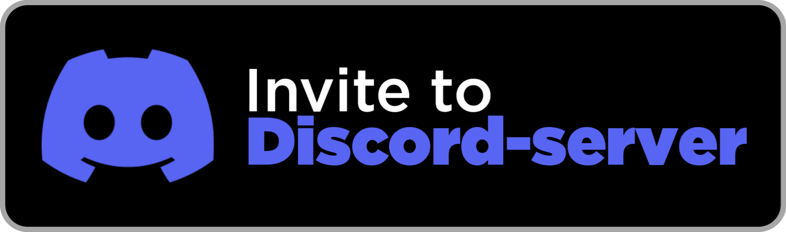

<!--
MomentariyModder Minimal 1.0.0 by MomentariyModder
The source code is available on GitHub!
-->

<!DOCTYPE html>
<html lang="en">
<head>
  <link rel="icon" href="img/themes/active/favicon.png">
  <title>Forum | MomentariyModder</title>
  <meta name="viewport" content="width=device-width, initial-scale=1, maximum-scale=1" />
  <meta name="title" content="Forum | MomentariyModder">
  <meta name="description" content="Hello, my name is MomentariyModder, or, as my friends and acquaintances often call me, Modder. I am passionate about creating mods and servers, and I used to work with modpacks and resource packs.">
  <meta name="keywords" content="Minecraft, Mods, MomentariyModder">
  <meta name="theme-color" content="#4bb4f1">


  <script src="https://code.jquery.com/jquery-3.3.1.min.js"></script>
  <script src="https://cdn.jsdelivr.net/npm/handlebars@latest/dist/handlebars.js"></script>
  <script src="https://mcapi.us/scripts/minecraft.min.js"></script>
  <script src="js/main.js"></script>
  <script src="config.js"></script>
  <script src="js/lightbox.min.js"></script>  
  <script type="text/javascript" src="js/lang/home.js"></script>
 
  <script>tosAgreed = true</script>
  
  <link rel="stylesheet" href="https://cdnjs.cloudflare.com/ajax/libs/font-awesome/7.3.1/css/all.min.css"/>
  <link rel="stylesheet" href="css/style.css">
  <link rel="stylesheet" href="config.css">
  <link href="css/lightbox.css" rel="stylesheet" media="all">

</head>

<body>

  <div id="target"></div>

  <script id="template" type="text/x-handlebars-template">

  <header>
    <div class="hero" id="hero">
      <a href="#!"><h1 style="padding-top: 3%;"></h1></a>
    <!-- <p> </p>
    <div class="news-card" align="center">
      <h3>Merry Christmas and Happy New Year!</h3>
    </div> -->
	<p> </p>
	<div id="news">
    <div class="news-card">
	 <h2><i class="fa-solid fa-indent"></i> Forum</h2>
	 <h3>Welcome to the Forum page!</h3>
     <h3>The Forum itself is located in the Discord-server. Yes, in Discord, as it is the most convenient platform for me to communicate with players of my projects. It is a separate category. In it you can complain about a bug, suggest ideas for projects and ask questions.</h3><br>
     <a href="https://discord.com/invite/9XqgjRd"></a><br>
	 <a href="https://discord.com/channels/696094539823448085/1326018122997829735">Direct link to the Forum category</a>
	</div>
	<p> </p>
    <div class="news-card">
	<br>
	<a href="../" class="button2"><i class="fa-solid fa-arrow-left"></i> Back to Home</a><br>
	</div>
	</div>
	<p> </p>
	</div>
  </header>
  
  <footer>
    <a>&copy; {{server_port}} {{server_name}}. Все права защищены! All Rights Reserved!<br>{{server_ip}}</a>
	<a></a>
	
  </footer>
  </script>
  <script src="js/license.js"></script>
</body>
</html>